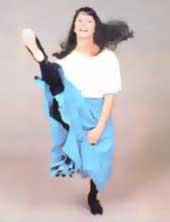
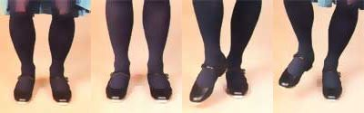
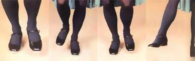
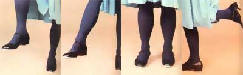

A mysterious disease-characterized by an uncontrollable desire to spend hours
dancing frantically to bluegrass music-is filtering out of the western North Carolina mountains. It's ...
The Southern Appalachian Cloggers in action.
It's hard to say exactly when it happened, but a number of MOTHER's staffers have gone and got themselves bitten by the clogging bug. The whole thing may have started when we admired the Southern Appalachian Cloggers in action at MOM's seminars last year. But then, it may also have been prompted by a wistful desire to join in on the action at Bill Stanley's ...a bluegrass-and-barbecue spot in nearby Asheville, North Carolina. At any rate, by the time the annual Mountain Youth Folk Festival rolled around this spring-and the Asheville Civic Center was packed with petticoat-layered and denim-clad youngsters dancing their hearts out-MOM's crew was distinctly envious ...we had clogging fever.
Well, it wasn't long before some of us decided to look further into the history of the old-time Appalachian dance form and to learn a few steps (Which we'll pass on to you later in this article). After all, clogging's fun ...it's sociable ...it's downright lively ...and almost anyone can learn how to do it. In fact, we'll almost stake the ranch that-by the time you finish reading this armchair guide to clogging-you'll be itching to put your feet to the test.
THE ORIGINS OF CLOGGING
Clog dancing probably had its roots in the traditional fancy steps of the Irish, Scotch, and English immigrants who settled in the Appalachian Mountains. One historian has suggested that the dance originated in the mill towns of England ...where workers-who commonly wore stout wooden-soled shoes would go out into the cobblestone streets during their lunch breaks and hold impromptu dancing contests.
Staff Photos
The steps developed by those factory laborers-along with the hornpipes, jigs, and reels of the Anglo-Saxon cultureswere then influenced, in the New World, by the heel-and-toe-accented rhythms of Cherokee ceremonial dances and the routines performed by blacks in minstrel and medicine shows. It's out of this synthesis, many people believe, that "buck and wing" or "buck" dancing was born.
Performed by one person, usually to the plaintive strains of mountain fiddle music, buck dancing features close-to-the-ground lateral foot movement, with the torso held fairly stationary. (In fact, some of the oldtime buck dancers prided themselves on their ability to "go it" with water-filled teacups balanced on their heads.)
Modern clogging resulted-the theory goes from a combination of buck dancing and square dancing. It often incorporates traditional square dance figures, performed to the quick tempo of bluegrass, but features a heavier beat and more emphasis on the rhythmic use of the heel than does buck dancing.
While authorities still debate about the origins of both buck dancing and clogging, one fact does seem pretty sure: Clog team, dancing originated in western North Carolina. The late Sam Queen who is regarded as the father of team clogging-formed the Soco Gap Dancers in the 1920's, and that act was among the first to take the Appalachian art out of the mountains and introduce it to a wider public.
As a logical consequence of the formation of dance groups came team competition ...and the first such event occurred in 1927, on the Asheville town square, when five different clubs vied for honors. (Ever since that time, clogging competition has been included in the annual Asheville Mountain Dance and Folk Festival, the oldest gathering of its type in the nation.)
However, during the early days when these teams were assembling, mountain hoofers still referred to their style of dancing as "buck dancing", "flatfooting", or "square dancing". It wasn't until a number of years later that the pastime and the name by which we know it got together.
In 1939 the Soco Gap Dancers-along with the Coon Creek Girls from Pinchem Tight, Kentucky-were invited by President Roosevelt to perform at the White House while the King and Queen of England were visiting. Queen Elizabeth (the present monarch's mother)who, it's reported, tapped her foot eagerly during the exhibition-remarked, "Why, that's just like our clogging" . . , and the name is still applied to the dance style that Sam Queen's group made famous. [EDITOR'S NOTE: If you'd tike to see some old-style cloggers in action, tune in to Country Classics, a program, shown on many PBS stations throughout the U.S. ]
DEFINITION OF TERMS
There are two types of clogging: freestyle and precision. The former-considered to be the more traditional of the two styles-features free-flowing and improvised steps. Precision clogging, on the other hand, is a relatively new development in the dance form. It was originated in the late 1950's by James Kesterson of Henderson County, North Carolina, who-in an attempt to modernize the dance and make it more interesting to audiences-developed set routines and standard calls for his Blue Ridge Mountain Dancers.
Needless to say, there's some resistance among clogging purists to the notion of precision footwork. Such folks feel that the "homogenization" of the steps, terminology, and calls may cause the art to lose much of its individuality and its charm ...and tend to blur a significant piece of our mountain heritage.
SETTING THE STAGE
There's an old saying that clogging is "caught. not taught". Nevertheless, MOTHER's fledgling dancers signed up for a few lessons at the local YWCA, and we found that the steps we learned in our classes were valuable in giving us a reference point to work from.
All you really need to get started are a record or tape with a thumping 4/4 beat, a smooth-surfaced floor (with a lot of room), and a pair of comfortable (but not too loose-fitting) hard-soled shoes. (MOM's cloggers recommend that beginners locate a recording of "The Battle of New Orleans", since it has the requisite beat but is slow enough not to be discouraging.)
You'll feel awkward at first, but remember that speed comes only with practice ...and that your pace will pick up as you become familiar with the motions. (One of the Southern Appalachian Cloggers told, us that she polishes her frenetic footwork by putting on a pair of heavy sweat socks and working out for an hour-every evening-on the linoleum in her kitchen.)
SHUFFLE, ONE, TWO, THREE ...
Once you've mastered three principal clogging steps, you can piece them together to form all kinds of impressive routines. The easiest step is the chug. The name is derived from the fact that both its sound and appearance are reminiscent of an old-timey locomotive, and it's done like so: Stand with your feet slightly apart and slide/hop forward bending your knees and moving both feet at the same time-and then slide/hop back into place as you straighten your knees. That's all there is to it ...forward and back, forward and back. The chug is a particularly good movement to use when you're just getting warmed up and want to feel the rhythm of the music. (It does wonders for lazy thigh muscles, too! )
A second clogging step is the .single shuffle, which somewhat resembles a basic tap dancing move. To do it, lift one foot slightly above the floor, scuff the ball of the foot forward, and then brush it back ...this results in a kind of two-beat tap. After you've shuffled that foot, stand on it. Now, lift and shuffle the other foot, and then step down on it. (You may want to keep yourself on track by reciting "shuffle-step, shuffle-step" while learning this one.) Practice the move until you're comfortable, at which point you can proceed to the basic clogging step, a four-beat piece of footwork.
The basic step combines the shuffle with three well-timed stomps. Start by doing a shuffle with your right foot ...then bring your right foot down firmly (as in the single shuffle) ...follow that by repeating the stomp with your left foot ...and finish up by putting your weight back on your right foot. (A count of "shuffle, one, two, three" is useful for marking time.) Now, you are ready to repeat the same sequence, starting with the left foot: shuffle (left), stomp (left), stomp (right), stomp (left) ...and so on, alternating the leading shuffle between right foot and left foot as you go. (Professional cloggers often add an extra accent-by stepping with more authority -to the second and fourth beats.)
There's some controversy, in clogging circles, about whether the arms should be used as you dance. It's true that many of the oldtime buck dancers keep their upper bodies virtually immobile while their feet go mad ...but some folks find that arm movements help them both keep their balance and get into the mood of the music. See how it feels to you, and go with whatever "body English" you like best.
While you are practicing these rudimentary clogging steps, you'll like as not wonder, at times, whether you'll ever be able to dance in a public place without counting aloud. Rest assured, confidence will come with time. (Full-length mirrors-although they can make you feel foolish at first-do allow you to see what you're doing ...and perhaps even correct it! )
When you're working on getting the basic feel of clogging, it may help to bear in mind a piece of advice that Poochey King (the female half of the Southern Appalachian Cloggers' lead couple) offers to novices: "It's all in the knees and the heels. If you concentrate on keeping your knees loose and remember to mark time with your heels, you will learn to clog."
FLYING FEET
After you feel competent at chugging, single shuffling, and basic stepping, you can set your sights on learning some really fancy footwork. While it'll probably seem impossible, in the beginning, to nudge your feet into the awkward configurations called for in advanced clogging steps, these "frills", too, will soon become second nature.
Perhaps the most impressive step is the Earl (it's also known as the Bertha or crossover ...clogging terminology varies from region to region). The Earl is a combination chug and hornpipe step, and it looks particularly flashy when performed by a person who has long legs. Here's how it's done: Clog a few basic steps to pick up the rhythm ...then, when it's time for your right foot to shuffle, extend that leg forward instead with the knee kept straight-while you chug backward on your left foot. On the second beat, bend your right knee and bring your foot in toward your body, and chug forward with your left foot. For the third beat, straighten and extend your right leg and chug backward again on your left leg. Finally, on the fourth beat, place your dangling foot safely on the ground ...and ponder the intricacies of a step that requires your body to be moving in so many different directions at one time. The Earl may be repeated from side to side ...and some folks are able to whip off a dazzling series of variations on the crossover.
The chicken (the origin of the name will become quite evident when you see this step performed) is a maneuver that is really not too difficult but is tiring. To do the step (it doesn't matter which foot you start with), chug back and forth on one leg ...twirling your other foot in a circle behind you, in time to the music. When performed correctly, the chicken has a syncopated rhythm, sounding like chug, tap (the second beat coming each time the circling foot touches the floor), chug, tap, chug, tap.
Another (relatively straightforward) clogging move that you might want to learn is the kick. To perform it, first get into the swing with several basic clogging steps (shuffle, one, two, three ...remember?). Then, when it's time to shuffle your right foot, step forward with it instead-elevating your left-and step back quickly on your left foot as you kick smartly with your right. (It's akin to a rocking motion.) Finish the figure with an expressive right-left-right stomp. You can dance a few more basic steps to get back into the rhythm of the music, and then substitute a kick for a left shuffle. The sideways chug is particularly useful for moving yourself laterally. (This is the step you'll often see freestyle dancers use when they're really "getting down" to the music.) All you do is slide; hop to the side with one foot ...while pushing off with the other foot. (Incidentally, it's a good idea to develop some degree of mobility when you're practicing all of your moves clogging forward, backward, in circles, and side to side-so you'll be able to fit in with ease on the dance floor or apply your newfound expertise at a square dance.)
There are plenty of other fancy clogging steps (you can always dress up one of the simpler moves with a kick or so), and once you feel proficient, you can even develop a few of your own. Most of the variations are founded on the basic chug, with rhythmic taps and shuffles added. The best way to improve your repertoire is to watch dance teams in action and figure out their steps. And don't be shy about seeking the counsel of any professionals (if you're lucky enough to have such folks in your area): MOM's cloggers have found that the team members-who are usually glad to see new interest in a too-long-neglected mountain art-are extremely helpful and like to give pointers.
EQUIPMENT
While hard-soled shoes, loose clothing, and lots of room are the only clogging essentials, you may well find that tap equipped footgear will help you progress more rapidly. For $5.00 to $10.00 you can have a set of heel-and-toe taps affixed to a pair of shoes (make sure they fit securely), or-in some areas-women can buy Mary Jane-style dancing slippers with taps already in place, for between $20 and $30. Most men simply have taps attached to a pair of leather-soled oxfords. Shoe repair shops or dancing apparel stores are likely sources of taps.
The cloggers in western North Carolina favor what are called jingle taps: distinctive sounding noisemakers with a movable circle embedded in the center of each metal plate.
If you do add the click makers to your footgear, keep in mind two points: Taps will mar the surface of finely finished hardwood floors ...and they'll wear loose (resulting in flying pieces of metal and, perhaps, twisted ankles) if you dance often on concrete. Should you find your tap-fitted shoes to be a mite too slick to control on your customary dancing surface, take a tip from the Southern Appalachian Cloggers: A small strip of masking tape-fastened across the sole of each shoe below the toe tap-will improve your traction.
WHAT ARE YOU WAITING FOR?
Now that you've learned the origins of this traditional form of mountain dancing and have gotten a few pointers on how to get started, the rest is up to you-Learn the rudimentary clogging steps, practice them diligently (the accompanying sidebar contains a list of bluegrass albums that'll help get your feet moving), and who knows ...you may be the belle or beau of a barn dance or corn shucking in your area this fall!
BLUEGRASS BEST BETS
We've compiled a list of records performed by bands that frequently accompany clogging teams in western North Carolina-which would be of use to anyone who'd like to practice his or her footwork or hold a clogging get-together.
The Midnight Plowboys. This album features a bluegrass group that often plays during MOTHER's Seminars ...and contains both vocals and instrumentals. It's available for $8.00-plus $1.50 shipping and handling-from Mountain Talents, Dept. TMEN, 523 Merrimon Avenue, Asheville, North Carolina 28804.
Any of the following records can be purchased for $8.0(1 apiece (on orders of one, two, or three records include $1.50 for shipping and handling ...if you want four or more, add an additional 50 cents per record to the basic handling charge) from Skyline Records,
Dept. TMEN, P.O. Box 8711, Asheville, North Carolina 28814.
Streamline Cannonball by Marc Pruett: banjo instrumentals.
Moonlight Madness by the Marc Pruett Band: bluegrass vocals and instrumentals. (Incidentally, MOM's own cartoonist,. Jack Vaughan, perpetrated the jacket illustration for this one.)
Raymond Fairchild Plays " Little Zane": instrumentals that feature Raymond Fairchild, "king of the five-string banjo".
Music From Cowbell Hollow by Peter Gott and Family: old-time and bluegrass string music.
Always True by the Crowe Brothers: old-time and bluegrass string instrumentals and vocals.
Mike Hunter, The Magician of the Mandolin: mandolin instrumentals, both bluegrass and waltzes.
|
 (L-R) Though some say clogging is ""caught, not taught"", MOTHER has assembled this clog-by-the-numbers photo series to show how a few of the steps are performed. THE CHUG: Stand with your feet slightly apart, slide/hop forward, bending your knees[1] ...then slide/hop back into place [2]. THE SINGLE SHUFFLE: Brush the ball of one foot forward [3], scuff your foot back [4], and then place your weight on the same foot [5]. THE BASIC CLOGGING STEP: First, shuffle your right foot [3 and 4] ...step right |
 [5] ...step left [6] ...and step right [7]. THE EARL: Chug backward on one foot and extend the other, keeping the knee straight [8] ...chug forward, bending your knee |
 [9] ...chug backward, straightening your leg [10] ...then shift your weight to that busy foot [11]. THE CHICKEN: Chug back and forth on one leg, twirling your other foot behind you in time to the music [12]. ABOVE: An impromptu kick always dresses up a clogging routine. |
|
 |
|
|